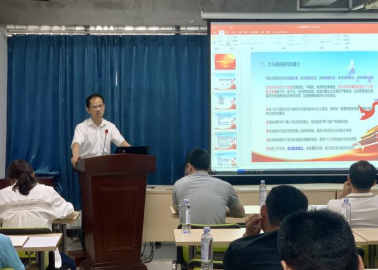

学院要闻
体育学院党建工作能力提升培训班第三场专题辅导报告举行
5月30日上午，学院基层党组织党建工作能力提升专题培训班在游泳馆会议室举行第三场讲座，体育学院院长王祚亮作“大兴调查研究之风，推动学校体育发展”主题报告。院党委书记田祖国及培训班全体学员等近30人参加培训，学院副院长吴江萍主持。

王祚亮从什么是调查研究、大兴调查研究的意义、我党大兴调查研究的优良传统、大兴调查研究的总体要求、大兴调查研究的主要内容、大兴调查研究的方法步骤、调查研究推动学校体育发展等七个方面做了详细的解说。
王祚亮表示，党员干部深入学习领会习近平总书记关于调查研究的重要论述，从政治和全局高度深刻认识调查研究的重要意义，切实增强思想自觉、政治自觉、行动自觉，以问题为导向，确保调查研究目的明确、方法得当、不走形式，让调查研究同业务工作和学校体育事业的发展紧密结合，针对学院行政管理、体育教学、学生工作、后勤保障等方面存在的问题，深入调查，通过调查研究来推动学校体育高质量发展。
王祚亮的讲座为学院党员干部深化对调查研究的认识、扎实推进学校体育事业的发展提供了重要启示。